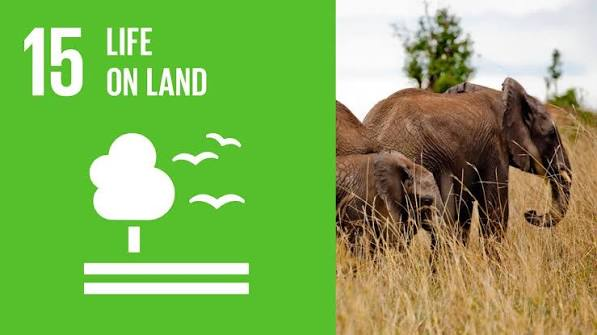

People
Damaging our ecosystems will cause a decrease in biodiversity and therefore less for on everyone's plates.
Sustainability Advisory Committee
Sustainable Development Goal 15
Protecting our land from climate change and harm, its inhabitants both flora and fauna.
Learn More
The Challenge
Life on land is important to our planet because it is where we reside as humans, and get the majority of our food from.
Goal 15 encourages urgent action to reduce the pollution and damage to land building a brigther future for the next generation.
The Impact
Damaging our ecosystems will cause a decrease in biodiversity and therefore less for on everyone's plates.
Desertification is destroying our ecosystems, we are losing all of our beautiful landscapes and precious animals because of it.
Decisions made today will influence the Land inherited by future generations.
TAKE ACTION
Individual actions alone cannot solve loss of land, but sustainable choices can support wider environmental efforts.
01 Reforestation - plant native trees so we can rebuild forests and create new forested areas to reduce carbon.
02 Sustainable agriculture - use different farming methods like crop rotation and reducing harmful pesticides to prevent soil erosion.
03 Increasing protected areas - enforcing national parks, wildlife reserves and freshwater areas to protect endangered species from poaching and habitat destruction.
04 Stricter laws and legislation - Making laws against illegal logging and wildlife trafficking to reduce the amount of harm done to our land.
Continue Exploring